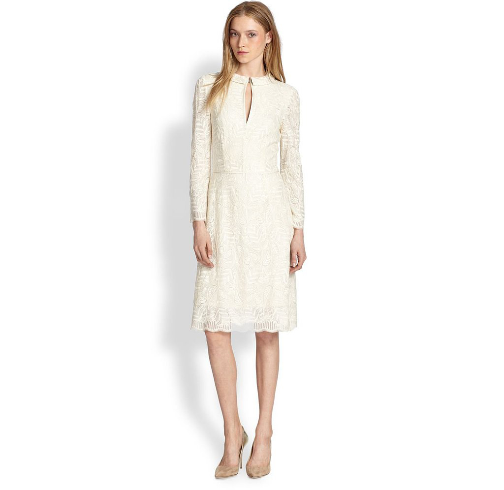

// markup
<head>
	<script type="text/javascript" src="jquery.imagemapster.min.js"></script>
</head>


<map name="shapes_map">
    <area shape="rect" data-group="rectangle" alt="" coords="378,39,463,116" nohref >
    <area shape="poly" data-group="blue-circle" alt="" coords="286,34, 298,42, 308,54, 
        314,79, 307,103, 292,118, 270,125, 242,122, 227,112, 216,97, 212,73, 219,53, 227,43,
        240,34, 264,29" href="#">

    <!-- concentric circles for stroke highlighting -->
    <area shape="circle" data-group="inner-circle,inner-circle-mask" coords="101,81,36" href="#">
    <area shape="circle" data-group="outer-circle-mask" coords="148,81,12" nohref >
    <area shape="circle" data-group="outer-circle" coords="100,81,59" href="#">
    <!-- End circles -->
</map>



		<map name="dressmap">
			<area shape="poly"
			coords="508,154,534,154,535,148,563,182,576,167,602,183,609,208,608,260,608,301,611,337,618,383,617,467,595,463,597,473,591,496,590,541,589,560,598,556,604,661,588,673,568,673,552,676,536,673,524,677,511,670,492,675,471,672,458,676,442,672,432,674,412,672,397,668,385,663,392,632,398,567,401,535,428,547,435,543,432,517,429,479,419,462,418,452,415,447,387,451,387,338,392,209,398,178,399,167,409,156,419,148,437,147,417,206,414,227,447,198,451,218,476,149,506,157,498,189,502,248,513,193,506,156" 
			alt="cream_dress">
		</map>

<script type="text/javascript">
$('#shapes').mapster({
        strokeWidth: 2,
        fillOpacity: 0.5,
            render_highlight: {
                fillColor: '2aff00',
                stroke: true
            }
    });
</script>